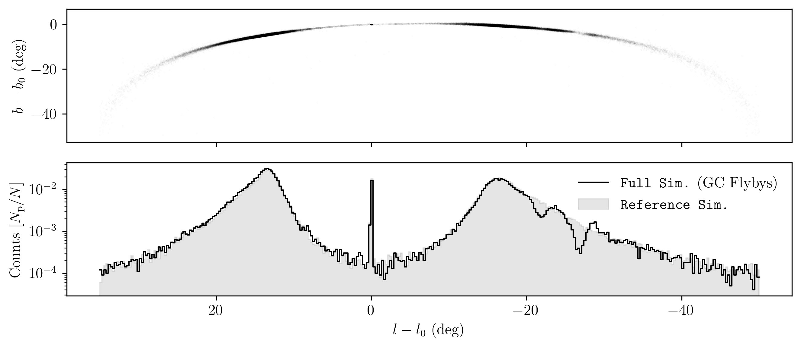
The most accurate model of the Palomar 5 stream would involve full
modeling of the internal dynamics of the cluster, which would mean
computing \(N\)-body interactions with
a \(\mathcal{O}(N^2)\) computation
time, stellar evolution, supernovae, an initial mass distribution,
treatment of binary star systems, etc. (for such an
example, see Gieles et al. 2021; Wang et al. 2016). Instead, we
opt for solving the restricted-three-body problem, also known as the
particle-test method, as we did for Ferrone et al. (2023), which
we describe here for completeness. As demonstrated by Mastrobuono-Battisti et al.
(2012), although the restricted three-body problem neglects the
internal evolution of the cluster, it still reproduces very similar
stream properties since the model captures key extracluster physics,
such as disk shocking and epicyclic stripping.
Below, we first present the approach used to include the Galactic
globular cluster system in our modeling (Sect. 2.1),
highlighting the similarities and differences with respect to what we
did in Ferrone et al. (2023); we
then summarize the method used to model the mass loss from the cluster
(Sect. 2.2) and finally discuss the quality
of the numerical integration (Sect. 2.3).
We begin by extracting positions in the sky, proper motions,
line-of-sight velocities, and distances, as well as masses and half-mass
radii, of 165 globular clusters from the Galactic globular cluster
catalog by (Baumgardt and Vasiliev 2021).1 We then convert the initial
conditions from sky coordinates into a Galactocentric reference frame,
by adopting a velocity for the local standard of rest of \(v_{\text{LSR}} = 240\) km s\(^{-1}\) and a peculiar velocity of the Sun
equal to \((U_\odot, V_\odot, W_\odot)=(11.1,
12.24, 7.25)\) km s\(^{-1}\), as
reported by Schönrich (2012). We set the
Sun’s position to \((x_\odot,y_\odot,z_\odot)
= (-8.34,0,0.027)\) kpc. We took the vertical position above the
disk from Chen
et al. (2001) and the distance of the Sun to the Galactic center
from Reid et al.
(2014). These transformations were performed using
astropy (Astropy Collaboration et al.
2013).
For the Galactic potential, we employed the second model from Pouliasis, Di
Matteo, and Haywood (2017), a superposition of a thin disk, thick
disk, and dark matter halo, with masses and scale lengths provided in
Table 1 of Ferrone et al. (2023). This
model is time-independent throughout our simulations. This model
satisfies a series of observational constraints such as local solar,
stellar density, the Galactic rotation curve, similarly to other
Galactic models such as MWpotential2014 from Bovy (2015) and
McMillian2017 from McMillan (2017). However, we use
only one Galactic potential to balance data volume and computation time,
which should suffice. Vasiliev and Baumgardt (2021)
found that only a few outer globular clusters are strongly affected by
different potential models. Generally, kinematic uncertainties are the
dominant factor in differences between orbital solutions per cluster.
Similarly, Grondin et al. (2024) generated
a globular cluster mass-loss catalog using seven different potential
models and found that their debris distributions were rather
model-independent, similar to those of Ferrone et al. (2023). While
the clusters’ exact positions in time may depend on the model, we assert
that interaction rates and stream formation are largely independent of
the choice of the Galactic potential model.
Lastly, we select an integration time of 5 Gyr as a compromise between maximizing interaction statistics and modeling the Galaxy as a time-independent, constant mass distribution. Ishchenko et al. (2023) analyzed the orbits of the Galactic cluster population using the same initial conditions as in this work within five live Milky Way-like potentials from IllustrisTNG (Pillepich et al. 2018). They found that in all sampled potentials, orbital changes remain minimal over 5 Gyr, becoming significant only at earlier look-back times when the host galaxy had significantly less mass or was undergoing a merger event.
Full simulationsThere is a primary methodological departure from Ferrone et al.
(2023). In that work, globular clusters evolved under the
gravitational effect of the Galaxy alone. In contrast, now we also
consider the effect of all other Galactic globular clusters by taking
into account the direct \(N\)-body
interactions between them. First, all clusters are represented by
Plummer spheres, each with its own mass and half-mass radius as reported
in the Baumgardt catalog (Baumgardt and Vasiliev 2021).
For the remainder of this paper, the full simulations
consider the gravitational forces from the globular cluster
interactions.
For these simulations, we proceeded in two steps:
First, starting from the Galactocentric positions and velocities of all 165 Galactic globular clusters, we integrate their orbits back in time for 5 Gyr under the influence of the Galaxy itself and their mutual influence. In the backward integration, the system of equations of motion for the globular clusters is thus: \[\ddot{\vec{r}}_i = -\nabla \Phi + \left.\sum_{j\neq i}^{N_{GC}} \frac{Gm_j}{\left(|\vec{r}_j - \vec{r}_i|^2 + b_j^2\right)^{3/2}}\right. \left(\vec{r}_j - \vec{r}_i\right),\] where \(\vec{r}\) indicates the Galactocentric position vector, the index \(i\) indicates the globular cluster of interest; the index \(j\) indicates the other globular clusters that are summed over. \(N_{GC}\) is the total number of globular clusters, which in this study is 165, \(m_j\) is the mass of the j-th cluster in the sample, \(b_j\) is its Plummer scale radius, and \(\vec{r_j}\) is its Galactocentric position. \(\Phi\) represents the same Galactic smooth potential that we discussed previously (Pouliasis, Di Matteo, and Haywood 2017, Model II, in the present case). Note that the masses and sizes of the globular clusters are kept constant in these simulations and are not allowed to vary with time, which means that we do not consider their internal evolution. In sec. 4, we discuss the implications of the modeling limitations.
Once we found the positions and velocities of the entire globular cluster, we sampled Palomar 5 with 100,000 particles from a Plummer distribution, taking the mass and half-mass radius from the Baumgardt catalog: \(1.3\times10^{4}~\mathrm{M}_\odot\) and \(27.6~\mathrm{pc}\). We then integrated the evolution of these particles forward in time to the present day, taking into account that each particle feels the gravitational potential of the Galaxy, its host cluster, and that of all the other clusters in the Galaxy. Note that we do not account for self-gravity among particles. The particles experience the gravitational field yet do not contribute to it, a common assumption in galactic dynamics, as the mass of an individual star is negligible compared to the mass of the larger dynamical system. The equation of motion of a generic particle among the 100,000 that populate Palomar 5 is thus: \[\ddot{\vec{r}}_p = -\nabla \Phi + \left.\sum_{j}^{N_{GC}} \frac{Gm_j}{\left(|\vec{r}_j(t) - \vec{r}_p|^2 + b_j^2\right)^{3/2}}\right. \left(\vec{r}_j(t)- \vec{r}_p\right),\] where the index \(p\) represents one of the 100,000 particles of interest, \(\vec{r_p}\) being its position, and \(j\) indexes over the globular clusters as in Eq. [eq:GCNBody]. We note that in Eq. [eq:equation_of_motion_particle], the positions of the globular clusters are time-dependent since they are being loaded during this step and not computed, unlike Eq. [eq:GCNBody].
The procedure described so far has been repeated 50 times, generating a new set of initial conditions each time, given the uncertainties on proper motions, line-of-sight velocities, distances to the Sun, and masses of all clusters, as reported in the Baumgardt catalog. We handle these uncertainties through a Monte-Carlo approach by sampling them with a Gaussian distribution and considering the covariance term between the proper motions. We use the most probable values for the initial conditions in the first simulation. We sample the uncertainties for all globular clusters. Additionally, for each resampling of Palomar 5’s mass, we also resample the distribution of the 100,000 star particles.
During the integration, we save intermediate snapshots to facilitate the analysis of stellar streams and the effects of cluster impacts. Specifically, for each realization of the Palomar 5 stream, we saved \(5000\) in snapshots, equivalent to a temporal resolution of 1 million years. We provide the parameters that specify our data volume in Table 1. Using single precision floating point numbers, the size of our simulations is approximately: \[\label{eq:data_volume_estimate} N_p \times N_{\mathrm{ts}}\times N_{\mathrm{phase}}\times N_{\mathrm{sampling}} \times 4~\mathrm{bytes}\approx 600~\mathrm{Gb}.\]
| \(N_p\) | \(N_{\mathrm{ts}}\) | \(N_{\mathrm{phase}}\) | \(N_{\mathrm{sampling}}\) |
|---|---|---|---|
| \(100000\) | \(5000\) | \(6\) | \(50\) |
Reference simulationsTo quantify the impact of globular cluster passages on the density of
the Palomar 5 stream, we performed a second set of simulations, which we
refer to as the reference simulations in this paper. These
reference simulations use the same 50 sets of initial
conditions as the full simulations, the same Galactic
potential, but exclude mutual interactions between globular clusters.
The approach adopted for this second set of simulations is thus
equivalent to that adopted already in Ferrone et al. (2023). In
Eq. [eq:GCNBody], only the gradient of the
Galactic potential is considered. In Eq. [eq:equation_of_motion_particle],
of the second term on the right side of the equation, only the influence
of Palomar 5’s Plummer sphere on Palomar 5’s particles is considered. In
other words, the sum iterates over only one globular cluster, the host.
We omit all interactions with the other clusters.
Each of the 100,000 particles that initially populate the cluster undergoes experiences the forces from Pal 5 and the Galactic potential. The mass and radius of Pal 5 are held constant over time. At each time step, a certain number of particles will therefore acquire sufficient energy to no longer be gravitationally bound to the cluster itself and thus go on to populate the streams, whose mass and spatial extent grow over time. It is important to note that in the approach used:
The masses and sizes of the clusters (and therefore the parameters of the Plummer potentials) do not change over time, which is an oversimplification, because in a self-consistent approach, these parameters would vary.
We use the same initial conditions for Pal 5 progenitor as it has today, and this is also a simplification, since Pal 5 - 5 Gyr years ago - must have contained at least part of the mass estimated today in its tails2.
The assumption in point 2 is a direct consequence of the approach described in point 1. Starting from a cluster with a mass and size similar to the current ones can lead to streams with lower velocity dispersions than those we would obtain if we had used a self-consistent approach. In a future article, we will report on the study of gap survival times depending on the masses and sizes of progenitor clusters (Ferrone et al, in prep). We note, however, that simplifications of this kind are not uncommon in literature. Pearson, Price-Whelan, and Johnston (2017) discussed the formation of gaps in the Pal 5 tails and assumed a time-independent mass of \(50,000 ~\mathrm{M}_\odot\) for Pal 5, over the last 4 Gyr; Erkal, Koposov, and Belokurov (2017) adopted a N-body approach to simulate Pal 5 stream, but used Pal 5 current conditions as their progenitor’s initial conditions; Banik and Bovy (2019) simulated the Pal 5 stream as emerging from a stellar system with a velocity dispersion of 0.5 km/s (similar to that of particles escaping from our cluster, as we have verified).
The characteristics of the streams modeled in this paper may be considered more representative of those of clusters that are now completely dispersed, i.e., it is conceivable that completely dispersed globular clusters that left behind a population of ‘orphan’ streams passed through characteristics similar to those of Pal 5 today (small masses and extended radii). In this sense, the initial conditions chosen (in terms of internal parameters) may be more representative of those of streams for which the progenitor is now dissolved (see, for example, the population of streams without progenitors described by R. Ibata et al. 2024) than those currently typical of Galactic globular clusters than those currently typical of Galactic globular clusters. 3
We used a leapfrog integrator because of its ability to preserve phase-space volume and conserve the Hamiltonian with each integration step. For instance, this method is preferable to a Runge-Kutta scheme, which can introduce non-physical and significant numerical errors in systems that require long-term stability and energy conservation. One drawback of the leapfrog integrator is that it requires a uniform time step throughout the entire computation, resulting in unnecessary computations for a particle after it has escaped from the host cluster. However, energy conservation and phase-space volume preservation are paramount when modeling stellar streams. The time step was therefore set to be small enough to conserve energy for the most interior particles within the cluster—ensuring that a higher mass loss did not arise from numerical error. We found that a time-step of 10,000 years was adequate to maintain energy conservation, with a median variation of \(10^{-12} \frac{\Delta E}{E_0}\), where \(E_0\) is a particle’s initial energy, and \(\Delta E\) is the difference between its final and initial energy.
We also checked the reverse integrability of the globular cluster
system for the reference simulations. By reverse
integrability, we mean the integrator’s capability to track the cluster
backward in time and then re-integrate it forward along the same
trajectory. Integrating point masses in a static axis-symmetric
potential conserves \(L_z\) and \(E\), which create regular periodic and
non-chaotic orbits. Therefore, any drift would arise from purely
numerical error. We selected a timestamp for which the drift in the
final position after forward integration, compared to the initial
position from the backward integration, was consistently at least two
orders of magnitude smaller than the Plummer scale radius used for
Palomar 5. This high precision ensures that no fictitious numerical
forces influence the system, preventing any artificial mass loss or
retention of star particles.
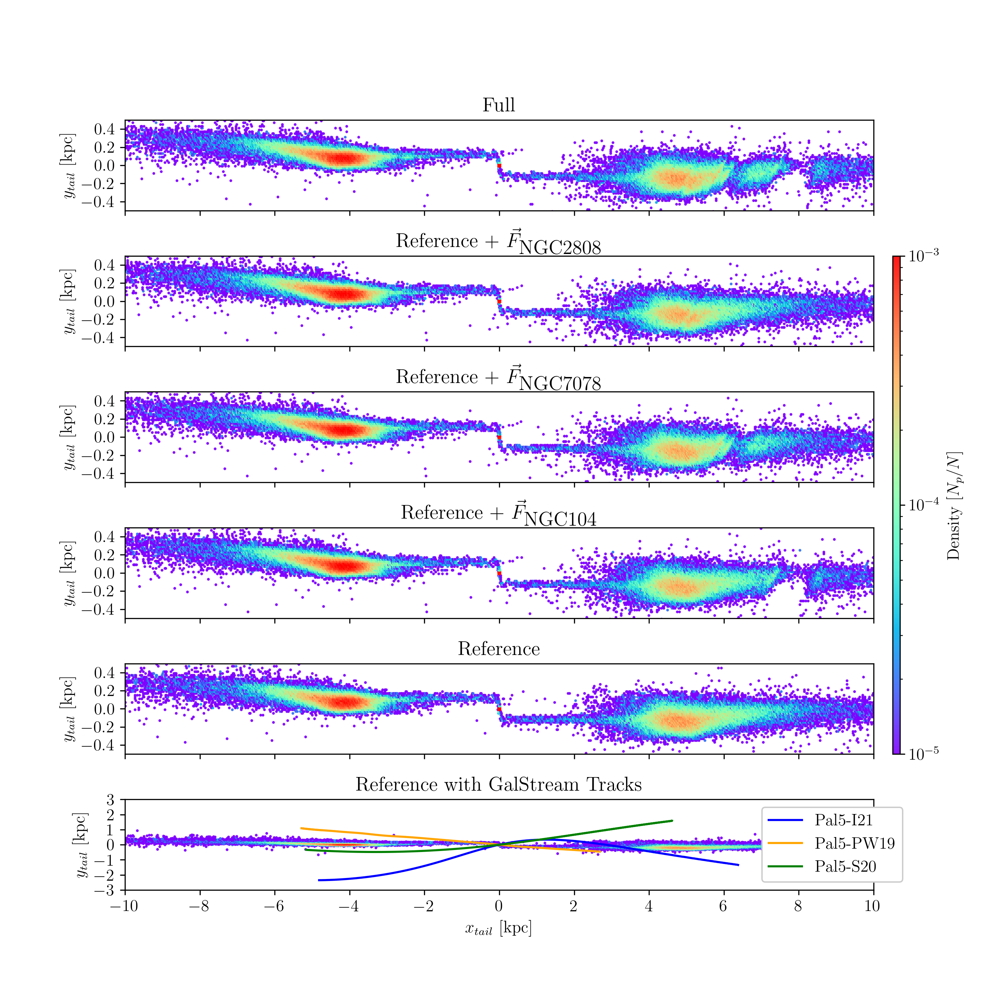
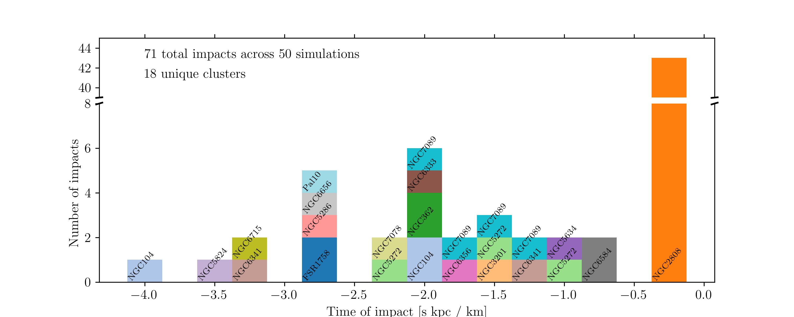
The presence of the other globular clusters affects the properties of the Palomar 5 stream. Fig. [fig:stream_on_sky] presents an obvious example of this effect, which we selected for its prominent gaps. Two of these gaps are visible in Galactic coordinates and become even more apparent when marginalizing over latitude to reconstruct the 1D density profile of the stream as a function of longitude.
Regarding the shape of the density distribution, the central peak corresponds to the still-intact globular cluster whose stars have not yet escaped. The stream’s density peaks are of the same order as the cluster itself, which is inconsistent with reality; the cluster’s peak density should be higher than that of the stream. Of course, this discrepancy is a result of our modeling choices. Since we use the present-day mass and radius for Palomar 5 for the whole simulation duration, the system is less dense than it should have been. In turn, our simulations have a strong initial mass loss, which adds to the amplitudes of the profile density peaks of Fig. [fig:stream_on_sky]. This inaccuracy is acceptable for the scope of this work. First, Palomar 5’s tails indeed have more mass than the cluster itself. R. A. Ibata et al. (2017) reports that there could be three times as much mass in Palomar 5’s tails as the cluster itself. Secondly, the exact form of the density distribution is less important than having a population of particles present that can probe a cluster flyby event.
To compare the reference and full
simulations more quantitatively, we work in the tail coordinate system,
in which the stream’s central axis aligns with the cluster’s orbit. We
based this coordinate system on the work of Dehnen et al. (2004) and present
it in Fig. 4. Briefly, in this system, the
\(x_{\mathrm{tail}}\) coordinate
represents the position of a particle along the orbit relative to the
globular cluster. Positive values of \(x_{\mathrm{tail}}\) are ahead of the
cluster, while negative \(x_{\mathrm{tail}}\) is behind the cluster.
The \(y_{\mathrm{tail}}\) coordinate
measures the particle’s distance within the orbital plane, where
positive values indicate that the particle is farther from the Galactic
center and negative values indicate that it is closer. Fig. [fig:decomposition] shows a
comparison between one of the 50 realizations of the Palomar 5 stream,
taking into account the gravitational interactions with all other
globular clusters in the Galaxy (top panel) and omitting them (bottom
panel). This comparison clearly shows the presence of two wide (\(\sim\)100 pc and \(\sim\)1 kpc) gaps in the leading tail and
of a more subtle underdensity at \(x_{\mathrm{tail}}\sim 5\) kpc (we refer the
reader to Appendix 6.1 for
a detailed description of the underdensities and gaps detection
method).
To determine which globular clusters were responsible for creating these gaps and when close passages occurred, we estimated the gravitational acceleration along the orbit of Palomar 5. We represented it in the (\(t\), \(\tau\)) space. \(t\) is the simulation time, and \(\tau\) indicates how long it will take for Palomar 5 to reach a given point in its orbit or how long ago it passed. The use of \(\tau\) is advantageous because the growth of the stream is approximately linear in \(\tau\).
On the other hand, streams in physical space are modulated by their orbital eccentricity with periodic expansion and contraction depending on the orbital phase (see the top panel of Fig. 5. Sanders, Bovy, and Erkal 2016, for an example). Adopting this time-space and reporting the gravitational acceleration along the Palomar 5 orbit in this space, identifying the globular clusters that produced the perturbation and the time at which it occurred becomes straightforward. We refer the reader to Appendix 6.2 for a detailed description of the procedure. In this way, we can identify that the clusters responsible for creating gaps in the simulation of the Palomar 5 stream, as reported in Fig. [fig:decomposition], are NGC 2808, NGC 7078, and NGC 104. Their close passages occurred 200 Myr, -1.9, and -2.1 Gyr ago, respectively.
To further investigate whether the three clusters above are responsible for producing the gaps observed in this simulation, we conducted additional experiments by including only the perturbation of each cluster at a time, while neglecting the gravitational perturbations of all the other clusters in the Galaxy.
To verify that the three suspected clusters are responsible for
producing the gaps, we conducted experiments by including one perturbed
at a time and excluding all others. We present these results in the
middle panels of Fig. [fig:decomposition] and clearly
show that NGC 2808, NGC 7078, and NGC 104 are the clusters responsible
for creating the underdense regions observed in the leading tails of
Palomar 5. It is worth noting that the times at which the passages of
these clusters occurred, according to our analysis, are in agreement
with the observed width of the corresponding gaps: the encounter with
NGC 2808 being very recent (only 200 Myr ago), its induced gap is still
very thin, because it takes time for a perturbation to grow into an
extended gap, as it is the case for those induced by the passages of
NGC 7078 and NGC 104, which occurred in earlier times. It is also
interesting to emphasize that gaps as thin as those generated by the
passage of NGC 2808, 200 Myr ago, can be detected by working in the tail
coordinate system and by making a comparative analysis
(full versus reference simulations): they are
so thin that they cannot be directly identified in Galactic coordinates
(see Fig. [fig:stream_on_sky]).
The analysis presented in Fig. [fig:decomposition] has been
repeated for the whole set of simulations, and online appendix
reports all of them for completeness. For all the streams,
morphologically speaking, the only changes appear to be the existence of
gaps or their absence. We do not observe a thickening of the streams due
to an increased velocity dispersion.
From this analysis, we can derive a statistical view of (1) the number of gaps generated on the Palomar 5 stream by the system of Galactic globular clusters, (2) the clusters that generated these gaps, and the time history of these perturbations. From this, we can then quantify (3) the properties of the perturbers (their masses, sizes, and orbital parameters) as well as (4) the impact geometry of the encounters, which allows us to understand which encounters are more favorable for generating gaps in the Palomar 5 stream. In the following, we will present the results of this analysis, addressing points (1) and (2).
By applying the methodology described above to the whole set of simulations, we can reconstruct the history of close passages of Galactic globular clusters to Palomar 5’s stream in the last 5 Gyr, which – we remind the reader – is the time interval investigated in our simulations. Fig. [fig:histogram_impact_time] and Table 2 present results of this analysis. NGC 2808 impacted Palomar 5’s stream about 200 Myr ago in 44 out of 50 simulations, creating a small gap at a similar position to the one reported in Fig. [fig:decomposition] in each case. Since this interaction occurred less than one orbital period ago, despite the uncertainties, the orbital solutions remain similar and thus produce consistent results across all simulations. However, as we continue to turn back time further, the uncertainties in the initial conditions allow the various orbital solutions to diverge from one another. Thus, in one configuration, a cluster can impact the stream at a given time, and yet at the same moment, in a different set of initial conditions, it could be on the other side of the Galaxy. We will discuss the necessary conditions for creating a gap in Appendix 6.4.
| NGC2808 | 44 | NGC7089 | 5 | NGC5272 | 4 |
| NGC6584 | 3 | NGC6341 | 2 | NGC6656 | 2 |
| NGC104 | 2 | NGC3201 | 1 | NGC5634 | 1 |
| NGC5286 | 1 | NGC362 | 1 | NGC5824 | 1 |
| NGC6356 | 1 | NGC6333 | 1 | NGC6715 | 1 |
| FSR1758 | 1 | NGC7078 | 1 | Pal10 | 1 |
In total, we report the finding of 73 gaps across our 50 simulations, which averages to 1.5 gaps per simulation. Eighteen different perturbers provoke the gaps. Table 3 presents the distribution of the number of gaps appearing per simulation. If we consider NGC 2808 an outlier and exclude it from the experiment, we observe an average of 0.6 gaps per simulation.
| Number of Gaps | 0 | 1 | 2 | 3 | 4 |
|---|---|---|---|---|---|
| Number of Sims. | 4 | 25 | 16 | 4 | 1 |
We need a more sophisticated statistic to compare our results to other simulations, so we turn to the gap creation rate developed by Carlberg (2012). The gap creation rate is the number of gaps that appear per unit time and is normalized by the stream’s length. For our simulations, this rate is given by: \[\label{eq:gap_creation_rate} \mathcal{R}_{\mathrm{Pal 5}} = \frac{1}{T}\int_{0}^T l^{-1}(t) \sum_i \delta(t-t_i) dt,\]where \(T\) is the total integration time, \(l(t)\) is the length of the stream, and \(\sum_i \delta(t-t_i)\) sums over the gap occurrences, with \(i\) indexing over the number of gaps in a given simulation. Here, \(\delta\) represents the Dirac delta function. This expression can be simplified to:\[\mathcal{R}_{\mathrm{Pal 5}} = \frac{1}{T} \sum_i \frac{1}{l (t_i)}.\]
This computation allowed us to analyze the distribution of gap creation rates across all simulations. Notice that since the gap creation rate adds in parallel, naturally, gaps that occur at earlier times when the stream was shorter are weighted higher than those that occur when the stream is longer. Fig. 1 presents these results which are is roughly consistent with a simple estimate of the average gap creation rate: with 73 gaps over 5 Gyr of integration time for a stream about 20 kpc in length, the naive estimate is approximately 0.015 km s\(^{-1}\) kpc\(^{-2}\) (which is roughly equivalent to \(0.015~\rm{Gyr^{-1}kpc^{-1}}\)). This naive estimate is about double the weighted mean gap creation rate of 0.009 km s\(^{-1}\) kpc\(^{-2}\) and is higher because it does not account for the growth of the stream over time, unlike Eq. [eq:gap_creation_rate].
full simulations. Lastly, we note that of the 73 observed gaps, only eight are in the trailing tail, and the rest are in the leading tail, which is a surprising result. A priori, since the star particles escape at similar rates from the L\(_1\) and L\(_2\) Lagrange points, each tail is of similar length and density. The main difference between the two tails is that the leading tail is closer to the Galactic center than the trailing tail by about 400 pc. Since the lengths are equal, and the offset between the tails is slight compared to the Galactocentric distance of about 10 kpc, we expected the gaps in each tail to be more or less the same. We can compute the probability of observing the unequal occurrences through the binomial distribution. First, since the 44 gaps linked to NGC 2808 are the result of the same flyby, they are not independent events. We remove them from this consideration, which leaves 21 gaps in the leading tail and 8 in the trailing. The probability of observing up to 8 successes in 29 trials, given a 50% chance of success, is 1.2%–unlikely, but possible. Additionally, other perturbers impact at consistent times, which may violate the assumption of independent events, as seen with NGC 2808.
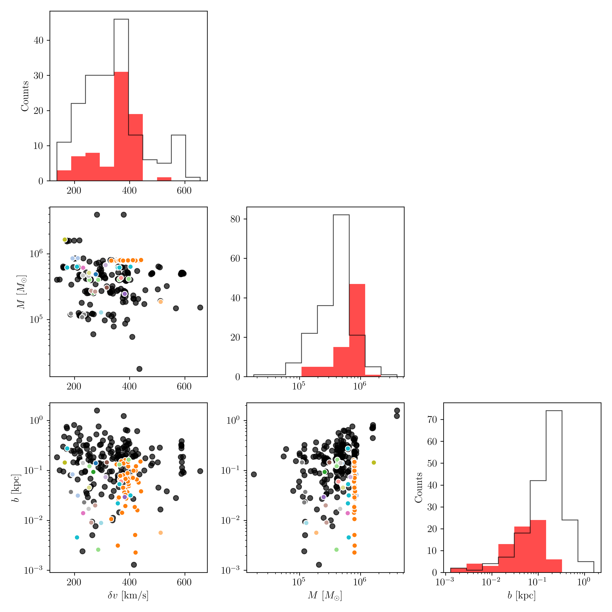
With the perturbers identified, we perform statistical analysis to understand the conditions necessary for a globular cluster to induce a gap in the Palomar 5 stream. We turn to impact theory, which in its simplest form is presented in works such as Binney and Tremaine (2008). Consider two particles: one stationary and the other moving past it. The impact parameter is the distance between the two particles at the point of their closest approach. The impulse approximation is employed, which assumes that the velocity of the perturber remains unchanged during the interaction. This assumption simplifies the computation.
To understand how the impacted particle is perturbed, one needs to compute its change in momentum, which is determined by integrating the force acting on the particle throughout the interaction. A useful approximation for this change in momentum, per unit mass, is the force at the closest approach multiplied by an estimate of the interaction time: \[\label{eq:change_in_momentum} \Delta p \approx \text{Force} \times \text{interaction time} = \frac{GM}{b^2} \times 2\frac{b}{\delta v} = 2\frac{GM}{b \delta v},\]where \(M\) is the mass of the perturber, \(b\) is the impact parameter, \(\delta v\) is the relative velocity of the perturber with respect to the particle, and \(G\) is the gravitational constant.
This equation asserts that a more massive perturber, passing closer to the particle and moving more slowly, will have a greater impact. It is important to note that the momentum change is inversely proportional to the velocity of the perturber. Note that this contrasts with the intuition from elastic collisions, such as those between billiard balls, where higher velocities result in greater impacts.
Erkal and
Belokurov (2015) extended this impact theory from one point mass
impacting another to studying how an extended body impacts a stream by
quantifying the change in momentum of a given particle as a function of
its distance from the point of greatest impact along the stream. Erkal and Belokurov
(2015) models their perturber as a Plummer sphere, like in our
simulations. Since a stream is not a point but has length and an
orientation in space, one needs to consider the parallel and
perpendicular components of the velocity to describe the impact fully.
Consequently, five parameters determine the change in velocity of a
given stream particle: \(M\), \(r_p\), \(b\), \(W_\parallel\), and \(W_\perp\), which are the mass of the
perturber, size of the perturber, impact parameter, parallel and
perpendicular components of the relative velocity. As detailed in
Appendix 6.3, we calculated these
parameters for all our full simulations by selecting – for
each of them – the strongest five flybys of a perturber with the
Palomar 5 stream. Thus, we compute 250 impacts and flag those that give
way to gaps.
Visual inspection of the five key impact parameters (\(M\), \(r_p\), \(b\), \(W_\parallel\), and \(W_\perp\)) did not reveal a clear distinction between flybys that create gaps and those that do not. Therefore, we only present the quantities from Eq. [eq:change_in_momentum] in Fig. [fig:impact_geometry_statistics].
Note that this figure displays the total relative velocity rather than separating the parallel and perpendicular components, as no specific trends were observed when plotting the two velocity components separately. We also excluded the characteristic cluster radius, which showed little correlation with the results, likely due to the narrow range of globular cluster radii (see Fig. [fig:mass_size_plane]). This factor might be more significant for dark matter subhalos, where size variation is greater.
While Fig. [fig:impact_geometry_statistics] demonstrates that mass, relative velocity, or impact parameter alone cannot predict gap formation, one interesting result emerges: impact parameters greater than 300 pc do not create gaps. The stream widths are roughly 200 pc, as seen in the online appendix. This finding is even more evident when examining the \(b\)-\(M\) plane. A series of perturbers at roughly \(\sim8 \times 10^5 M_\odot\) highlights NGC 2808’s flybys, where all encounters with impact parameters under 200 pc result in gaps, while those beyond this distance do not. In other words, even the most massive globular clusters with masses greater than about \(10^6 M_\odot\) cannot cause gaps if their impact parameters are greater than roughly \(300\) pc. Interestingly, even fast encounters (\(\delta v > 300\) km/s) can produce gaps for impact parameter values below this threshold. Perhaps this is not surprising, since the range of possible relative velocities is much less than that of mass and impact parameters, which vary by two and three orders of magnitude, respectively. In contrast, the relative velocities only vary by about a factor of three.
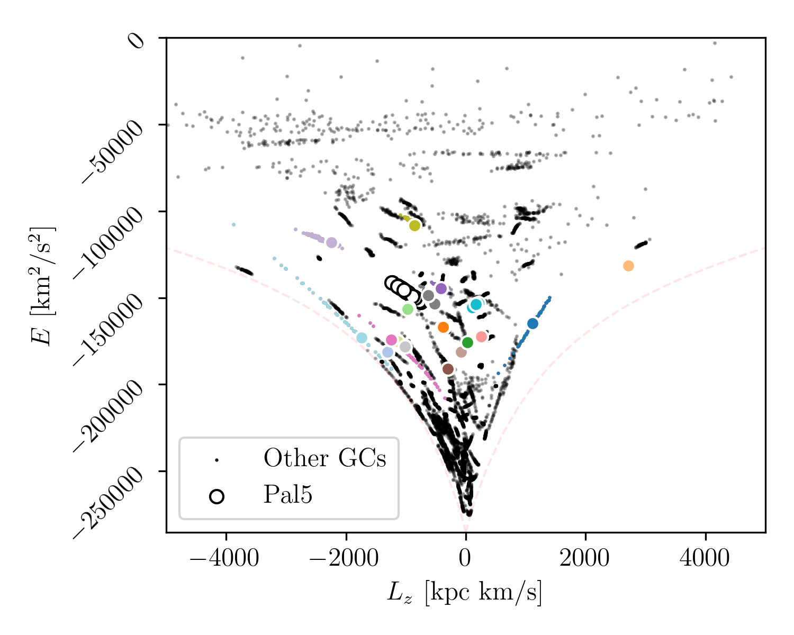 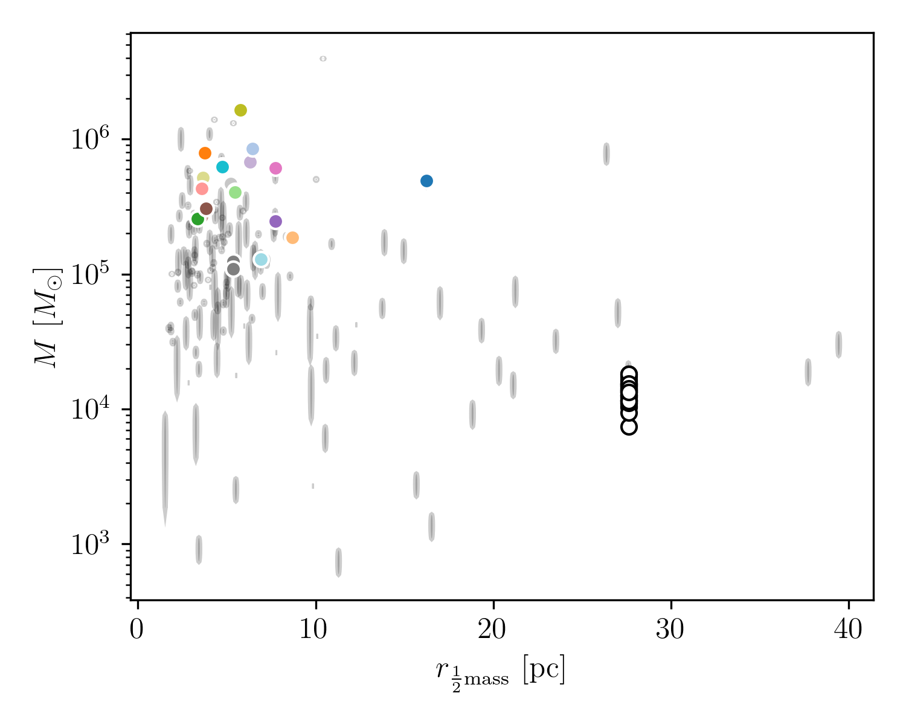 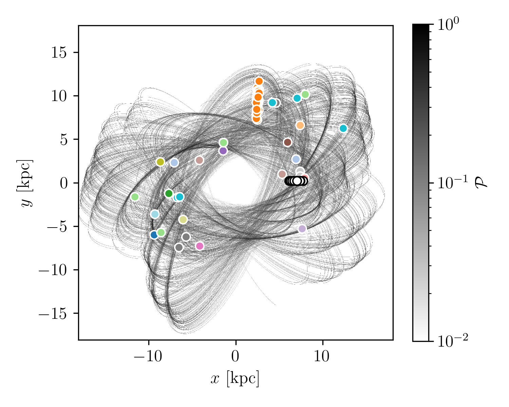 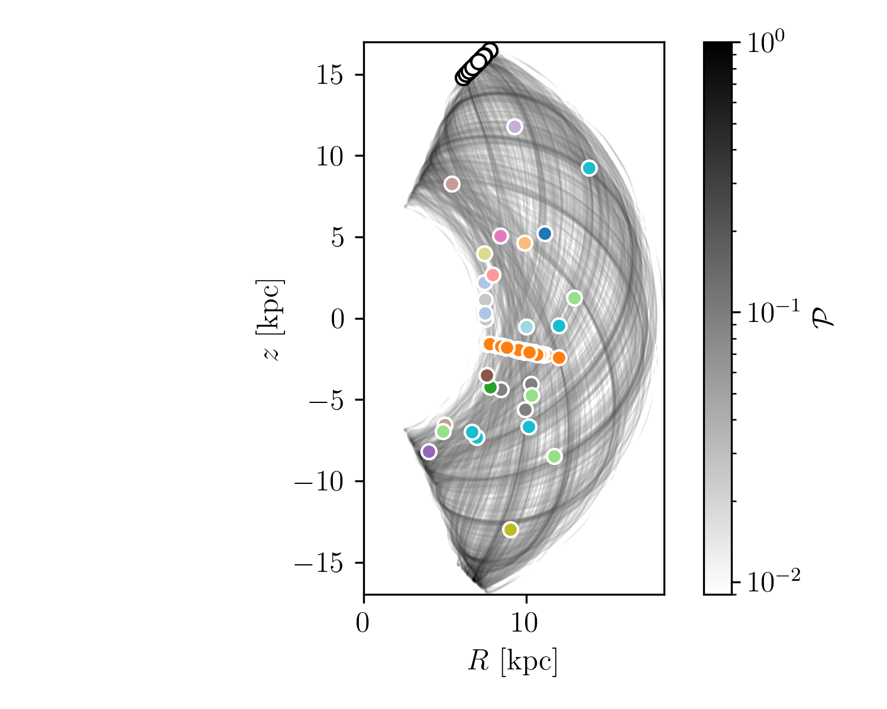
Once all the key impact parameters are estimated, we can use Eq. [eq:change_in_momentum] and calculate \(\Delta p\), the change in momentum (per unit mass) imparted by a cluster flyby on Palomar 5 stream. Fig. 2 shows the distribution of imparted change in momentum for all impacts that produce a gap compared to those that do not. On average, encounters that lead to gap creation impart a change in momentum on stream particles, which is a factor of 10 higher than encounters that do not form gaps (but with some overlap in the low-velocity tail). Interestingly, changes in momentum, which lead to gap creations, extend over a large range in velocities. There is a factor of about 100 between the smallest and largest changes with NGC 2808 (orange color in the histogram) imparting changes in the velocity of stream particles, which redistribute over the whole range of \(\Delta p\).
In addition to characterizing the parameters governing cluster encounters with the stream, since we know which clusters have produced gaps on the tail of Palomar 5, we can also verify their orbital and structural properties. Fig [fig:mass_size_plane] shows just this, where we first show the clusters’ mass and size (i.e., half-mass radius) that cause gaps on the tails of Palomar 5, dividing them from those that do not. As can be seen, no cluster with mass below \(10^5 M_\odot\) causes gaps on the Palomar 5 stream, and all perturbers, except FSR 1758, have a half-mass radius below 10 pc. Even more interesting is their distribution in the E-L\(_z\) plane, which shows that the clusters that cause gaps are on both direct and retrograde orbits (negative and positive values of \(L_z\)). However, all of the perturbers exist in an energy interval between \(-2\) and \(-1 \times10^5~\mathrm{km}^2\mathrm{s}^{-2}\), which is because only clusters within Palomar 5’s orbital space can interact with the stream: clusters with higher orbital energies tend to have larger apocenters than that of Palomar 5 and thus spend most of their time away from Palomar 5’s orbital volume.
Finally, it is worth noting the location of impacts with the stream, specifically whether they occur when Palomar 5 is near its pericenter. Fig. [fig:mass_size_plane]’s bottom panel shows that encounters can occur at all orbital phases of Palomar 5, when it is close to the pericenter, but also very far away from it, at the outskirts of its orbital space. However, when taken all together, the location of gap-creating impacts shows a strong negative correlation with the Galactocentric radius \(r\), with the number \(N\) of encounters favorable to gap formation going as \(N = -2.5r + 50\) (with a Pearson coefficient of -0.86). While there are more clusters near the Galactic center, clusters naturally spend more time near their apocenters, and the lower relative velocities in these regions should favor gap creation. However, this result suggests that the cluster Galactic number density outweighs these factors when determining the number of gaps. The results are for Palomar 5 only, and a future study would need to investigate streams along various orbits before generalizing this conclusion.
We briefly compare our simulated gaps to the literature on Palomar 5.
In the bottom panel of Fig. [fig:decomposition], we compare
the tracks of Palomar 5 that were compiled in galstreams by
Mateu
(2023). The mid-point positions of the streams do not have the
same Galactocentric positions as Palomar 5 from Baumgardt’s catalog, and
this difference creates an offset when projected into tail coordinates.
Moreover, since we sample the distances to Palomar 5, the Galactocentric
position within the Baumgardt catalog varies. To combat this, we
position the mid-point of the Galstream tracks at the
cluster’s center of mass, allowing us to compare the length of the
observed tracks to our simulated streams. We use the three tracks
Pal5-PW19, Pal5-S20, and Pal5-I21 from Price-Whelan et al. (2019),
Sollima
(2020), and R. Ibata et al. (2021),
respectively. For each track, we found the distance from the cluster in
both directions, counting the number of gaps within this range, and we
present this in Fig. 3. In
the maximum limit, many gaps could appear at a rate of about one per
realization. However, only a few gaps occur at the shortest reported
stream length. We note that the gap generated by the recent perturbation
induced on the stream by the passage of NGC 2808 (whose occurrence is
very likely according to our models) sits in a portion of the simulated
tail which is at the edge of the observed one (see bottom panel in
Fig. 2). This element and the fact that this gap is skinny, because it
is very recent, probably make its detection difficult.
We observe no gaps within 3 kpc of the cluster in our simulation. There may be a few reasons for the absence of gaps in the portion of the tails closer to the cluster center. First, as Sanders, Bovy, and Erkal (2016) demonstrated, the dispersion of action-frequencies in the stream plays a role. For instance, the frequency corresponding to the azimuthal action, \(J_\phi\), is \(\dot\theta_\phi = - \frac{\mathcal{\partial H}}{\partial J_\phi}\) and where \(\theta_\phi\) is the angle describing the position of the particle phase space between momentum (\(p_\phi\)) and position (\(\phi\)) axes—where \(\phi\) is the azimuthal angle between the x-y axes in physical space. Stream regions with well-separated frequencies are more susceptible to gap formation, while those with a wide frequency range (near the cluster) tend to erase the history of impacts. Thus, for a gap to form, the imparted change in frequency must exceed the range of frequencies in the impacted region. Therefore, the strong flybys close to the cluster were inconsequential for gap formation.
Another possible explanation is the different thicknesses of the simulated tails at different distances from the cluster’s center. At distances less than 3 kpc from Palomar 5, the tails are skinny, with a typical thickness of less than 100 pc. To cause gaps in these regions, the clusters would have to pass close to the stream, with impact parameters similar to the thickness itself. We note that the thinness of the tails at these distances is probably a direct consequence of the initial parameters we chose for the simulation. For Palomar 5, 5 Gyr years ago, we assumed the same internal parameters (mass and size) as the cluster today. With such parameters, after 5 Gyr of evolution, our system has lost most of its mass, and therefore, the part of the tails closest to the cluster itself, whose density depends mainly on the most recent mass loss (see, for example, Fig. A.3 in Mastrobuono-Battisti et al. 2012), is necessarily very thin because the simulated cluster has essentially no more mass to lose. This last point also has a consequence in the gap creation rate, which we derived at the end of Sect. 3.3: with only 70% of the tail (\(\sim\) 14 kpc over 20 kpc, excluding the innermost \(\pm 3\) kpc from the cluster center) suitable for forming gaps, the gap creation rates are about 50\(\%\) higher than those estimated in the previous section, where values have been derived taking into account the full tail extent. This gap creation rate would still not be high enough to reproduce the number of gaps in Palomar 5’s tails, as reported by Carlberg, Grillmair, and Hetherington (2012). Their study suggested the presence of five gaps with a 99 % detection confidence, leading to a gap creation rate of 0.17 Gyr\(^{-1}\) kpc\(^{-1}\). If correct, this rate would be too high to be explained by Galactic globular clusters only.
An additional explanation for the absence of gaps in the inner regions of a stream is given in App. 6.4. Briefly, the eccentricity of an orbit induces tidal shocking at the pericenter passages that cause episodes of increased mass loss where the escaped stars leave with a higher mean velocity and greater velocity dispersion. In essence, streams from progenitors on eccentric orbits are made of two components: a continuous flow of stars plus many packets of stars that burst out from pericenter passages. The gap impact occurs at a single position, creating a gap in each subpopulation. However, the gaps have different drift rates across the groups, and they eventually go out of phase, erasing the impact’s signature. The packets of stars disperse with time. However, bursts contribute to more escaped stars as the simulation evolves than the continuous outflow. As a result, at late stages of the simulation, the region nearest to the globular cluster is made of distinct yet overlapping populations. After an impact in this location, the impact site between the groups quickly goes out of phase.
The simulations presented in this paper suggest that, in the last 5 Gyr of evolution, Palomar 5’s stream could have experienced multiple close encounters with other Galactic globular clusters, some of which can create gaps – even a few kiloparsecs wide – in its tails. Currently, the literature debates whether or not a gap exists in the observed portion of Palomar 5 tails. R. A. Ibata, Lewis, and Martin (2016) found no statistically significant gap in Palomar 5 tails, while Erkal, Koposov, and Belokurov (2017), analyzing the same dataset as R. A. Ibata, Lewis, and Martin (2016), suggested the presence of a few dips and gaps in the tails, at angular distances between \(2^\circ\) and \(9^\circ\) from the cluster center (see also Bonaca et al. 2020). While our simulations produced 73 gaps across 50 realizations, only about 22 are beyond the current length of the observed portion of the stream, which means, on average, we obtain at least one gap from a globular cluster within the past 5 Gyr. However, we did not attempt to create mock observations or simulate a full detection process accounting for the challenges of disentangling field stars from stream stars. While such an analysis would be valuable, it is beyond the scope of this study.
Our simulations produce a stream for Palomar 5 that is longer than the currently observed extent. In simulations, stream detections are straightforward because we can use reference runs to clearly separate stream particles from the field and compare against a known “true” structure. In contrast, observational data are inherently more challenging due to magnitude limits, contamination from field stars, and the lack of a ground truth for comparison.
The factors mentioned above could lead one to conclude that the number of gaps identified in this study could represent an upper limit. However, this conclusion is incomplete. Globular clusters lose mass and evaporate over time, leading to an incomplete catalog of perturbers. Moreover, the present-day masses used in our simulations are likely lower than the historical masses of these clusters. For example, Pearson et al. (2024) conducted a study simulating the dissolution of a realistic globular cluster population to identify how many stellar streams we should expect in the Milky Way and used a mock catalog of globular clusters with masses above 10\(^4 M_\odot\) totaling about 10,000 clusters. Their setup implies that more perturbers could have been present in the past, potentially increasing the frequency and number of gaps in Palomar 5’s stream.
We note that our results seem to be in tension with the conclusions
of Banik and
Bovy (2019), who presented a numerical study of Palomar 5 tails,
orbiting a Milky Way-like potential, where both dark matter subhalos and
baryonic sub-structures (Galactic bar, spiral arms, giant molecular
clouds, globular clusters) were taken into account to quantify the
importance of these latter in density variations in Pal5 streams. While
their methods are extremely similar to ours, their analysis diverges
significantly. Specifically, Banik and Bovy (2019) focused on
examining power spectra, analyzing variations in the one-dimensional
stream density in stellar counts along the length of the stream. Upon
comparison with our simulations, we observe that the power spectra from
our full simulations that include globular clusters and the
reference simulations that do not significantly differ. We
suggest that this may be due to the signal from only one or two gaps
caused by globular clusters not being sufficient to produce notable
differences in the overall power spectrum. Additionally, Banik and Bovy
(2019) may not have inspected the profiles for individual gaps,
which may be why they did not report them. Further investigations would
be needed to confirm this interpretation and thoroughly assess the
impact of globular clusters on stream density profiles.
Erkal, Koposov,
and Belokurov (2017) also present a study about the impact of
globular clusters in producing gaps on the Pal 5 stream. In section 6.3
of their article, Erkal, Koposov, and Belokurov
(2017) discuss the fact that globular clusters with masses
greater than \(10^6~\textrm{M}_\odot\)
are rare in the Galaxy, especially at distances compatible with the
orbit of Pal 5, while – based on previous works – they estimate that
subhalos of dark matter of similar mass are at least three times greater
in number. This difference leads them to conclude that the gaps they
report in the Pal 5 streams are more likely to be induced by dark matter
subhalos than by globular clusters.
However, as we show in this paper, even clusters with masses below \(10^6~\textrm{M}\odot\) can produce gaps. The clusters perturbing the Pal 5 stream are clusters with masses up to 10 times lower than those considered by Erkal, Koposov, and Belokurov (2017). It is thus possible that Erkal, Koposov, and Belokurov (2017) have underestimated the impact of globular clusters’ close passages on a stream such as Pal 5. It is more difficult, however, to make a comparative analysis between the role of clusters and subhalos at equal stellar mass. Being less dense than globular clusters, subhalos should produce less intense perturbations on streams (for fixed impact parameters and relative velocities). We can derive from Sanders, Bovy, and Erkal (2016)’s third figure that a more concentrated system delivers a higher velocity kick but over a shorter distance, while a more spread out system will affect more stars yet perturb them less. A systematic comparative analysis to quantify the role of clusters and subhalos in producing gaps and perturbations in stellar streams still needs to be done.
The impact of globular clusters’ close interactions with stellar
streams has also been the object of another recent paper by Doke and Hattori
(2022), who concluded that the chance for GD-1 gaps, which have
been reported in several works (see,
for example, Bonaca et al. 2019; T. J. L. de Boer et al. 2018; T. de
Boer, Gieles, and Erkal 2020) to be produced by globular clusters
is very low. This result is not necessarily in contradiction with ours
since GD-1 has a pericenter which is almost twice that of Palomar 5
(see, for
example Malhan and Ibata 2019). As discussed in Sect. 3.3, the number, \(N\), of close encounters that lead to gap
creation is anti-correlated with the distance \(r\) to the Galactic center. If we naively
use the same radial dependence of gaps from Palomar 5 for GD-1 by
swapping a pericenter from 6 kpc to 16 kpc, we would reduce the number
of gap-favorable impacts by more than a factor of 2. Moreover, we note
that Doke and
Hattori (2022) pre-selects the globular clusters that could have
experienced a close encounter with the GD-1 stream by selecting only
clusters that pass at a distance of less than 0.5 kpc from the stream,
having a relative velocity smaller than 300 km/s. As shown in our
Fig. [fig:impact_geometry_statistics],
bottom-left panel, in the case of Palomar 5, this choice would lead to
excluding most of the encounters favorable to gap creation, which turn
out to have relative velocities above 300 km/s, reducing the total to
just 19 gaps. It would be interesting to repeat a similar study as the
one made by Doke
and Hattori (2022) for GD-1, imposing no selection on possible
candidate clusters.
As already suggested in previous works which have studied the impact of
baryonic structures on Palomar 5 tails (Pearson,
Price-Whelan, and Johnston 2017; Banik and Bovy 2019), this
cluster may lie in a region of the phase-space which is not favorable to
distinguish gaps created by dark matter subhalos from gaps created by
baryonic structures, such as the Galactic bar and giant molecular
clouds. Our study shows that close encounters with globular clusters
constitute a further element that confuses a simple interpretation of
the observed Palomar 5 stream gaps (if any). Other clusters and streams
in the orbital energy range of Palomar 5 may suffer from the same
difficulty. Going to lower orbital energies worsens the situation
because the effect of the Galactic bar, giant molecular clouds, and
interactions with globular clusters becomes even more efficient. In the
innermost regions of the Galaxy, where the density of dark matter
subhalos is maximal, globular cluster streams are intrinsically more
difficult to find, in addition to the fact that the dynamical times in
these regions become so small that the stars lost from globular clusters
do not redistribute themselves for the most part into thin structures
(see Ferrone
et al. 2023). It is thus probably only at larger distances from
the Galactic center than those spanned by Palomar 5’s orbit that the
impact of dark matter subhalos may become dominant, but one should bear
in mind that at these distances, the number density of subhalos also
decreases. In the future, it will be interesting to apply the type of
study conducted here to the whole set of streams to quantify the regime
in which they are favorable to the creation of gaps from baryonic
structures.
Our study demonstrates that globular cluster flybys can produce density gaps in the stellar streams of Palomar 5. The occurrence and characteristics of these gaps depend on the stream’s dynamical and structural properties, the perturber’s mass, and the impact parameter. While our simulations predict the formation of gaps in Palomar 5’s tails, the predicted gaps do not align with the regions of the stream currently observed. Several factors contribute to the absence of simulated gaps in the observed portions of Palomar 5’s tails, including the stream’s varying thickness, the dispersion of action frequencies near the cluster, and the initial conditions adopted in our simulations.
The broader implications of our findings indicate that globular cluster interactions add a layer of complexity to interpreting stellar stream substructures, complicating efforts to distinguish between baryonic and dark matter-induced gaps. While Palomar 5’s phase-space region may not be ideal for isolating the impact of dark matter subhalos, extending this analysis to other streams, particularly those at larger Galactocentric distances, could provide clearer insights.
Future work should involve a systematic comparison of gap creation rates across various Galactic potentials and extend the scope to a wider range of streams and globular clusters. Such a work could disentangle regimes where baryonic and dark matter-induced substructures can dominate gap creation, shedding light on the elusive influence of dark matter subhalos on stellar streams. Additionally, we can continue to add realistic physics to the Galactic environment, such as the merger of the Sagittarius dwarf galaxy, the passages of the Large and Small Magellanic clouds, as well as a time-evolving globular cluster population that compensates for the clusters’ mass loss, evaporation, and similarly add members from the current incomplete census.
For each of the 50 simulations, we compare the final snapshots
between the reference and full simulations
using the tail coordinate system, as shown in Fig. 4. We only saved the
reference simulations at the final time stamps, thus from
Eq. [eq:data_volume_estimate]
where \(N_{ts}\)=1, leading to a data
volume of about one hundred measly megabytes. We inspected these
differences by generating 2D density maps of the streams. Additionally,
we marginalized over the \(y'\)-coordinate to produce 1D density
profiles along the \(x'\)-axis. We
show these comparisons in the results section (see Fig. [fig:profiles]).
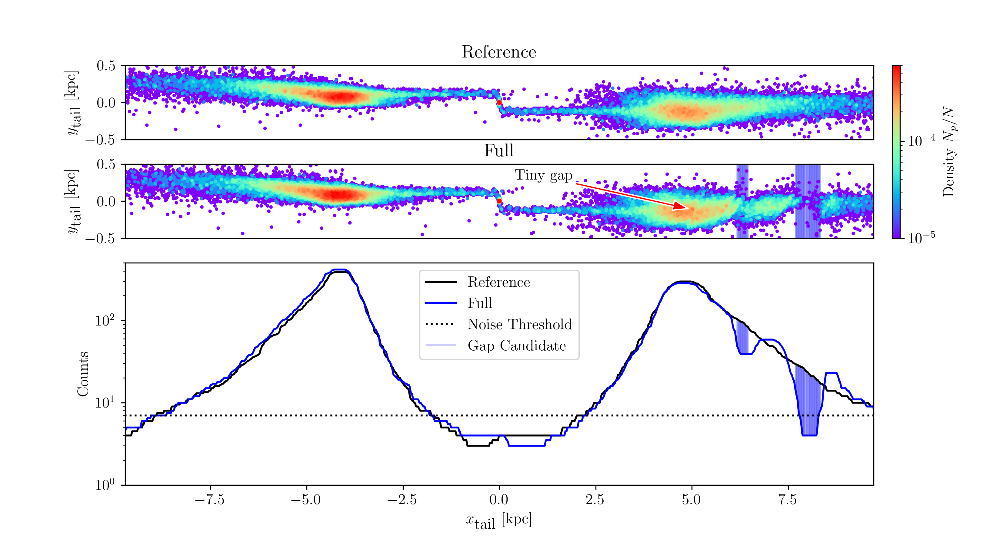
To construct the 1D density profiles, we binned the data using the \(\sqrt{N}\) rule, where \(N\) is the number of data points (\(N_p = 10^5\)). After binning the 1D profiles, we apply a median boxcar smoothing technique. At each bin, we select a number of adjacent data points from both sides, place them in a list, and replace the central value of the bin with the median. We use 10 adjacent points per side, corresponding to a smoothing length of approximately 1 kpc. This procedure reduces high-frequency noise and smooths the profiles. For instance, notice the absence of a high mass peak indicating the center of mass in the bottom panel of Fig. [fig:profiles].
With the smoothed 1D density profiles in hand, we search regions
where the full simulations are significantly underdense
compared to reference simulations, surpassing stochastic
fluctuations. We first impose a signal-to-noise ratio threshold, \(\mathcal{SNR}\). The signal is the log of
the counts per bin from the reference 1D density profile;
we propagate errors assuming a Poisson distribution. We then compute a
threshold for the number of counts in the reference
simulation, \(N_v\), using the
transcendental equation: \[\mathcal{SNR} =
\ln(10) \log_{10}\left(N_v\right) \sqrt{N_v}.\] By
setting \(\mathcal{SNR} = 5\), we solve
for \(N\) using
scipy.optimize.fsolve, finding that \(N\) must be greater than 7. After
discarding insignificant bins (i.e., those with counts below the
threshold), we computed the log ratio of the counts between the
reference and full simulations: \[\mathcal{R}_i =
\log_{10}\left(\frac{N_{f,i}}{N_{v,i}}\right),\] where \(\mathcal{R}_i\) is the log ratio, \(N_{f,i}\) are the counts from the
full simulation, and \(N_{v,i}\) are the counts from the
reference simulation for each bin \(i\). We then analyze the \(\mathcal{R}_i\) distribution. If the
differences between the density profiles are primarily due to stochastic
processes of similar magnitude, this distribution should resemble a
Gaussian, as expected from the central limit theorem. Thus, we flag all
regions where the density is underdense by more than two standard
deviations, which should highlight regions whose underdensity is
unlikely to be the result of the sum of stochastic processes but rather
the passage of another globular cluster.
However, this method has its limitations, especially when detecting smaller gaps. As outlined by Erkal and Belokurov (2015), since gap growth is a dispersion phenomenon, a small gap is not indicative of a weak impact but a recent one. Additionally, since our streams have finite width, some gaps are oblique with respect to the stream axis. In such cases, marginalizing over \(y'\) erases the gap’s signal, making it impossible to detect in a 1D profile. This limitation is particularly evident in gaps caused by NGC 2808, as discussed in the results. Therefore, this quantitative analysis serves as an aid to visual inspection rather than a complete substitute for it. This method helps with significant, subtle gaps that the eye does not notice in the 2D maps. The online appendix presents these profiles.
We aim to identify the origin of the gaps observed at the end of the simulation. To this end, we examine the evolution of stream density over time. Instead of using the x’-coordinate, we introduce \(\tau\), which represents time rather than distance. Specifically, \(\tau\) indicates how long a cluster will take to reach a given point in its orbit or how long ago it passed. This choice of coordinates is advantageous because the growth of the stream is approximately linear in \(\tau\). In contrast, in physical space, streams on eccentric orbits expand and contract depending on the orbital phase.
Sanders, Bovy, and Erkal (2016) extended the analysis of Erkal and Belokurov (2015), demonstrating that action-angle variables provide a useful coordinate system for analyzing stream evolution, as actions are conserved quantities and their associated angles grow linearly over time. Although we became aware of this work only after completing our analysis, we note that \(\tau\) is a suitable approximation and behaves similarly to the angle variable corresponding to the azimuthal action: \(\tau \approx \theta_{\phi, i} - \theta_{\phi,\text{GC}}\).
The core of our analysis is presented in Fig. [fig:force-on-orbit]. The bottom panel shows the evolution of the stream density over time. To avoid extremely low-density regions at the stream’s edges, we applied the same density threshold as from Eq. [eq:density_threshold] to focus on the more significant areas of the stream. Next, we modeled Palomar 5’s orbit as a proxy for its stream and sampled points along the orbit to measure the gravitational force exerted by other globular clusters. The top panel of Fig. [fig:force-on-orbit] shows how the total gravitational acceleration on Palomar 5’s stream evolves over its length throughout the simulation.
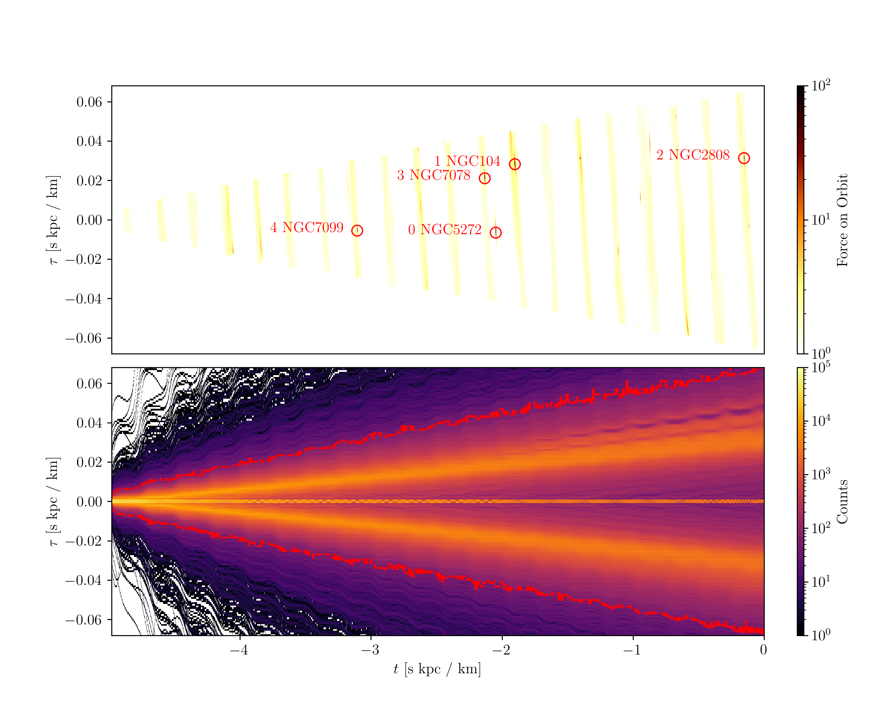
We then used scipy’s ndimage (Virtanen et al.
2020) package to identify the top five local maxima in the data
space of gravitational acceleration \(\vec{g}\) as a function of time \(t\) and the stream coordinate \(\tau\). First, we smooth the data space by
taking a 5-point moving average kernel. Secondly, we use a maximum
filter to locate coordinates in the (\(t,\tau\)) data plane that are local maxima
to at least 10 adjacent data points. We order these locations and save
the top five strongest interactions. Then, we iterated over the
contributions of individual globular clusters to determine which cluster
contributed the most to each peak in \(\vec{g}\). We label each significant peak
with the corresponding globular cluster.
Afterward, we cross-referenced these peaks with the locations of the gaps identified by studying the density maps and profiles from Fig. [fig:profiles]. The impact leaves a low-density wake in the (\(t,\tau\)) plane for large gaps resulting from strong interactions. the bottom panel of Fig. [fig:force-on-orbit] shows the wakes corresponding to the impacts of NGC 104 and NGC 7808.
Fig. [fig:force-on-orbit] contains some interesting information. Notice the periodic ribbons of force in the \((t,\tau)\) plane. The ribbons are due to pericenter passages where Palomar 5 is getting closer to the center of mass of the globular cluster system. Additionally, for the impacts of NGC 104 and NGC 7078, wakes can be observed in the density map. Another important aspect is that the strongest peak in gravitational force does not necessarily create a gap. Notice how NGC 5272, which was labeled with 0 to indicate that it has the greatest local maxima, does not have a gap. The reason for this is manifold. For instance, the force needs to be modulated with time since the change in momentum is the determining factor and not the peak magnitude of the force. Additionally, there is an offset of about 200 pc between the stream and the orbit, as seen when viewing the stream in tail coordinates, so peaks upon the orbit are good proxies for the stream but are not definitive. We found that the top five greatest impacts accounted for all gaps, except for Sampling 014 as shown in Fig. 3 of our extended list of figures, whose gap from NGC 6584 corresponded to the 7th peak.
We compile the results of this analysis into a table. Each row of the
table corresponds to a gap; its corresponding suspects are the columns.
The culprit is labeled as TRUE. For a handful of
simulations, to double-check that we make the correct verdict, we
recompute the simulations, yet individually adding one globular cluster
at a time. As a result, we can confirm that singular gaps arise from the
suspected clusters. Fig. [fig:decomposition] shows one
such example.
As discussed in Sect 3.3, five parameters determine the change in velocity of a given stream particle: \(M\), \(r_p\), \(b\), \(W_\parallel\), and \(W_\perp\). In the following, we describe how we estimated these parameters during impacts in our simulations.
To achieve this, we identify the impact of the most significant clusters, as determined in the previous analysis in Sec. 6.2. Then, we refine these estimates to pinpoint the exact location of the impact along the stream and the precise moment it occurred. To do so, we fit a third-order parametric polynomial to the stream using the saved snapshots from our simulations:
\[\vec{s}(\tau) = \left\{ \begin{aligned} x(\tau) &= a_0 + a_1 \tau + a_2 \tau^2 + a_3 \tau^3 \\ y(\tau) &= b_0 + b_1 \tau + b_2 \tau^2 + b_3 \tau^3 \\ z(\tau) &= c_0 + c_1 \tau + c_2 \tau^2 + c_3 \tau^3, \end{aligned} \right.\] where \(x\), \(y\), and \(z\) represent the parametric line describing the stream in Galactocentric coordinates, \(\tau\) is the stream coordinate in time as described in the Appendix 6.2, and is used as the independent variable to parameterize the position along the stream. The coefficients \(a_i\), \(b_i\), and \(c_i\) are the polynomial coefficients. We found that a second-order polynomial was insufficient to capture the curvature along the full length of the stream, with divergence at the ends of the tails. A third-order polynomial was sufficient and desirable, as the lowest order adequately captures the stream’s path over the entire length under consideration.
In this analysis, we only consider one side of the stream. For
instance, if the impact candidate was in the leading tail, only the star
particles with \(\tau > 0\) are used
to constrain the stream track. The polynomial coefficients were
determined through a minimization method using the Nelder-Mead algorithm
from scipy’s optimization package.
Since we saved the simulation snapshots at a temporal resolution of 1 Myr–rather than at the integration time-step, which would have generated excessive data, we must interpolate between snapshots to more precisely estimate the impact geometry. We fit the stream’s shape with a parametric third-order polynomial at the five time steps surrounding the approximate impact time. This time is a period of 5 Myr, sufficiently covering the interaction time. The interaction time can be estimated as \(t \approx \frac{100~\text{pc}}{300~\frac{\text{km}}{\text{s}}} \approx 0.3~\text{Myr}\).
Then, we used a cubic spline interpolation for the coefficients describing the stream’s shape, which allows us to describe each polynomial coefficient as a function of time. Consequently, we can parameterize the stream as a function of both simulation time and position along the stream: \[\vec{s}(t,\tau) = \left\{ \begin{aligned} x(t,\tau) &= a_0(t) + a_1(t)\tau + a_2(t) \tau^2 + a_3(t)\tau^3 \\ y(t,\tau) &= b_0(t) + b_1(t)\tau + b_2(t) \tau^2 + b_3(t)\tau^3 \\ z(t,\tau) &= c_0(t) + c_1(t)\tau + c_2(t) \tau^2 + c_3(t)\tau^3. \end{aligned} \right.\]
The values of the coefficients as a function of time are obtained through linear interpolation, ensuring that the coefficients at the snapshot times match the values constrained by the simulation data.
Next, we fit the trajectory of the perturber with a second-order
polynomial. With equations for both the stream and the perturber as
functions of time, we identify the time and location of impact by
minimizing a cost function, defined as the distance between the stream
and the perturber: \[b(t, \tau) = \left\lVert
\vec{s}(t, \tau) - \vec{p}(t) \right\rVert,\] where \(\vec{s}(t, \tau)\) is the Galactocentric
position of a point on the stream, \(\vec{p}(t)\) is the position of the
perturber, and \(b\) is the distance
between the two. The minimum value of \(b\), denoted as \(\text{min}(b)\), represents the impact
parameter. We performed the minimization using scipy’s
optimization package with the L-BFGS-B method, which
allowed us to place bounds on \(t\) and
\(\tau\), ensuring no extrapolation
occurs (Davidon
1991).
Once this minimization is done, determining the relative velocity becomes straightforward. Since the minimization provides the impact parameter, time of impact, and the corresponding value of \(\tau\), we can compute the derivatives of the parametric equations at \(t_{\text{min}}\) and \(\tau_{\text{min}}\). The parallel and perpendicular components of the perturber’s velocity relative to the stream are given by:
\[\begin{aligned} \delta \vec{v} &=\vec{v_p} - \vec{v_s}, \\ w_\parallel &= \left(\delta \vec{v}\right)\cdot \hat{v_s},\\ w_\perp &= \sqrt{\Delta v ^2 - w_\parallel ^ 2}, \end{aligned}\] where \(\vec{v}_p\) and \(\vec{v}_s\) are the velocities of the perturber and the stream, respectively. We compute the strongest five flybys for each of the 50 simulations. Thus, we created a sample of 250 impacts and flagged those that give rise to gaps. We refer the reader to Sect. 3.3 for the presentation and discussion of the results.
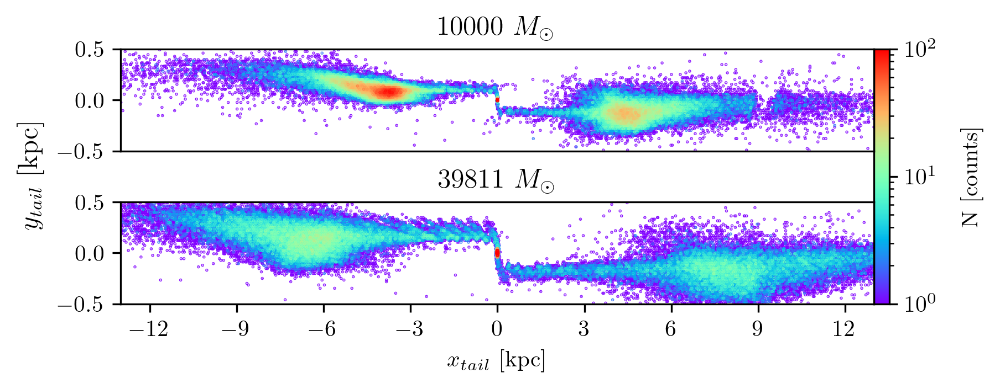
In Section 2.2, we emphasized that the conditions chosen to simulate the formation and evolution of streams around Pal 5 are probably unrealistic. By choosing, as we did, the same values for the mass and size of the cluster 5 billion years ago as the cluster has today, we did not take into account the loss of mass and internal evolution of the cluster over time. In particular, the velocity dispersion of the stars in a cluster and the velocity dispersion of the stars leaving the cluster and entering the stream depend on the cluster’s mass. It is therefore legitimate to ask whether, using a progenitor with a different mass and/or size, the gaps survive and whether, in particular, gaps formed several billion years ago can still be visible today.
While we anticipate that a specific study on this aspect is in preparation (Ferrone et al., in prep), we would like to preview a few results here, particularly regarding the gap decoherence phenomenon presented in Fig. 5. First, Fig. [fig:gap_no_more] shows two streams with the same orbital parameters that were impacted by NGC 7078. The top panel shows a stream originating from a host mass of \(10,000\) \(M_\odot\), while in the second panel we increased the mass to \(\sim40,000\) \(M_\odot\). For simplicity, both clusters have the same half-mass radius of 27 pc. The encounter occurred about two and a half billion years ago with NGC 7078, which has a mass of \(5.16\times10^{5}~M_\odot\). The gap persists for the lighter host, yet is barely visible in the case of the more massive host.
Fig. 5 dissects the more
massive stream of Fig. [fig:gap_no_more] and explains why
the gap does not persist. The bottom panel shows the total density
distribution, decomposed into two profiles: stars that are either leaked
or shocked out of the cluster. By shocked, we mean stars that are lost
during pericenter passages. Tidal forces generally scale with \(r^{-3}\), and thus significantly intensify
during pericenter passages (see Fig. 3 of Dehnen et al. (2004) for an
illustration of the magnitude of tidal forces along an orbit). A
consequence of these passages is that many more stars escape, fleeing
with higher mean velocity and velocity dispersion—this can be visualized
in the “Christmas tree” illustration in Fig. A.3 of Mastrobuono-Battisti et al.
(2012). We consider the continuous outflow of stars between
pericenter passages to be leaked stars. We identify pericenter passages
by computing each local minimum of the cluster’s Galactocentric 3D
radius using scipy.signal.find_peaks. The duration of each
shock is given by \(t_{\textrm{shock}} =
2\sqrt{r/|\nabla\Phi|}\), where \(r\) is the Galactocentric radius and \(|\nabla\Phi|\) is the magnitude of the
acceleration from the Galactic potential. Stars within this time range
around a given pericenter passage are all given the same color and shown
as individual groups in the first through fourth panels of Fig. 5.
The classic collisionless boltzmann equation: \[\frac{df}{dt} = 0 = \frac{\partial f}{\partial x} \frac{dx}{dt} + \frac{\partial f}{\partial v} \frac{dv}{dt}+ \frac{\partial f}{\partial t}\]
we are saying that the pusles drift with the same velocities thus \(\frac{dv}{dt}=0\). I impart more assumptions, namely that: \(\rho(x,t=0)=\delta(x)\) and that velocity is defined as a normal distribution that does not change over time. This means that I can write the initial distribution function as:
\[f(x,v,t=0) = \delta(x)\frac{1}{\sigma\sqrt{2\pi}}\mathrm{exp}\left(-\frac{1}{2}\left(\frac{v-\langle v \rangle}{\sigma}\right)^2\right)\]
the solution to the evolution of the density is \(\rho = \int f dv\), and you also need to perform this variable substitution \(f(x,v,t) = f(x-vt,v,0)\)
\[\rho(x,t) = \frac{1}{\sigma t \sqrt{2\pi} }\mathrm{exp}\left(-\frac{1}{2}\left(\frac{x-\langle v \rangle t}{\sigma_v t}\right)^2\right)\]
it’s also useful to know the relative velocity of the impact site between one group and another. These things drift apart. How much faster does one group go ahead of another? \[\delta v_{ij} = \frac{x\prime}{t-iT} - \frac{x\prime}{t-jT}\] where \(i,j\) are the indexes for the packet. Note that this only works for \(t > nT\) where \(T\) is the orbital period, or spacing between the impacts, \(n\) is the number of pericenter passages. \(t\) is the total simulation time. \(x\prime\) is the position of the impact. It makes sense that the velocity of the particle is the position where the impact occured, divided by the time since it left the origin.
The Baumgardt catalog has been assembled across a series of works, see: (Baumgardt, Sollima, and Hilker 2020; Baumgardt et al. 2019; Baumgardt and Hilker 2018). The catalog can be found on the World Wide Web at https://people.smp.uq.edu.au/HolgerBaumgardt/globular/.↩︎
We used the same approach (i.e., time-independent masses and sizes) to model the whole set of globular clusters.↩︎
In this regard, we recall that Bovy (2014) modeled the GD-1 stream as the result of the dissolution of a cluster with a mass of \(2 \times 10^4 M_\odot\), and a tidal radius of \(0.07\) kpc.↩︎